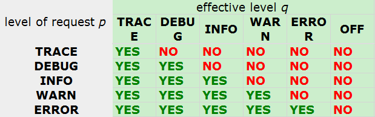

logback 的架构
跟 简介 类似
Logger, Appender 和 Layouts
Logback 构建在三个主要的类上：Logger，Appender 和 Layouts。这三个不同类型的组件一起作用能够让开发者根据消息的类型以及日志的级别来打印日志。
Logger 类作为 logback-classic 模块的一部分。Appender 与 Layouts 接口作为 logback-core 的一部分。作为一个通用的模块，logback-core 没有 logger 的概念。
Logger 上下文
任何日志 API 的优势在于它能够禁止某些日志的输出，但是又不会妨碍另一些日志的输出。通过假定一个日志空间，这个空间包含所有可能的日志语句，这些日志语句根据开发人员设定的标准来进行分类。在 logback-classic 中，分类是 logger 的一部分，每一个 logger 都依附在 LoggerContext 上，它负责产生 logger，并且通过一个树状的层级结构来进行管理。
一个 Logger 被当作为一个实体，它们的命名是大小写敏感的，并且遵循以下规则：
命名层次结构
如果一个 logger 的名字加上一个
.作为另一个 logger 名字的前缀，那么该 logger 就是另一个 logger 的祖先。如果一个 logger 与另一个 logger 之间没有其它的 logger ，则该 logger 就是另一个 logger 的父级。
例如：名为 com.foo 的 logger 是名为 com.foo.Bar 的 logger 的父级。名为 java 的 logger 是名为 java.util 的父级，是名为 java.util.Vector 的祖先。
root logger 作为 logger 层次结构的最高层。它是一个特殊的 logger，因为它是每一个层次结构的一部分。每一个 logger 都可以通过它的名字去获取。例：
1 | Logger rootLogger = LoggerFactory.getLogger(org.slf4j.Logger.ROOT_LOGGER_NAME) |
所有其它的 logger 通过 org.slf4j.LoggerFactory 类的静态方法 getLogger 去获取，这个方法需要传入一个 logger 的名字。下面是 Logger 接口一些基本的方法：
1 | package org.slf4j; |
有效等级又称为等级继承
Logger 能够被分成不同的等级。不同的等级（TRACE, DEBUG, INFO, WARN, ERROR）定义在 ch.qos.logback.classic.Level 类中。在 logback 中，类 Level 使用 final 修饰的，所以它不能用来被继承。一种更灵活的方式是使用 Marker 对象。
如果一个给定的 logger 没有指定一个层级，那么它就会继承离它最近的一个祖先的层级。更正式的说法是：
对于一个给定的名为 L 的 logger，它的有效层级为从自身一直回溯到 root logger，直到找到第一个不为空的层级作为自己的层级。
为了确保所有的 logger 都有一个层级，root logger 会有一个默认层级 — DEBUG
以下四个例子指定不同的层级，以及根据继承规则得到的最终有效层级
Example 1
| logger 的名字 | 指定的层级 | 有效层级 |
|---|---|---|
| root | DEBUG | DEBUG |
| X | none | DEBUG |
| X.Y | none | DEBUG |
| X.Y.Z | none | DEBUG |
在这个例子中，只有 root logger 被指定了层级，所以 logger X，X.Y，X.Y.Z 的有效层级都是 DEBUG。
Example 2
| logger 的名字 | 指定的层级 | 有效层级 |
|---|---|---|
| root | ERROR | ERROR |
| X | INFO | INFO |
| X.Y | DEBUG | DEBUG |
| X.Y.Z | WARN | WARN |
在这个例子中，每个 logger 都分配了层级，所以有效层级就是指定的层级。
Example 3
| logger 的名字 | 指定的层级 | 有效层级 |
|---|---|---|
| root | DEBUG | DEBUG |
| X | INFO | INFO |
| X.Y | none | INFO |
| X.Y.Z | ERROR | ERROR |
在这个例子中，logger root，X，X.Y.Z 都分别分配了层级。logger X.Y 继承它的父级 logger X。
Example 4
| logger 的名字 | 指定的层级 | 有效层级 |
|---|---|---|
| root | DEBUG | DEBUG |
| X | INFO | INFO |
| X.Y | none | INFO |
| X.Y.Z | none | INFO |
在这个例子中，logger root，X 都分配了层级。logger X.Y，X.Y.Z 的层级继承它们最近的父级 X。
方法打印以及基本选择规则
根据定义，打印的方法决定的日志的级别。例如：L 是一个 logger 实例，L.info("...") 的日志级别就是 INFO。
如果一条的日志的打印级别大于 logger 的有效级别，该条日志才可以被打印出来。这条规则总结如下：
基本选择规则
日志的打印级别为 p，Logger 实例的级别为 q，如果 p >= q，则该条日志可以打印出来。
这条规则是 logbakc 的核心。各级别的排序为：TRACE < DEBUG < INFO < WARN < ERROR。
在下面的表格中，第一列表示的是日志的打印级别，用 p 表示。第一行表示的是 logger 的有效级别，用 q 表示。行列交叉处的结果表示由基本选择规则得出的结果。

例子：
1 | package chapters.architecture; |
获取 Logger
通过 LoggerFactory.getLogger() 可以获取到具体的 logger 实例，名字相同则返回的 logger 实例也相同。
1 | Logger x = LoggerFactory.getLogger("wombat"); |
x，y 是同一个 logger 对象。
可以通过配置一个 logger，然后在其它地方获取，而不需要传递引用。父级 logger 总是优于子级 logger，并且父级 logger 会自动寻找并关联子级 logger，即使父级 logger 在子级 logger 之后实例化。
logback 环境的配置会在应用初始化的时候完成。最优的方式是通过读取配置文件。
在每个类里面通过指定全限定类名为 logger 的名字来实例化一个 logger 是最好也是最简单的方式。因为日志能够输出这个 logger 的名字，所以这个命名策略能够看出日志的来源是哪里。虽然这是命名 logger 常见的策略，但是 logback 不会严格限制 logger 的命名，你完全可以根据自己的喜好来，你开心就好。
但是，根据类的全限定名来对 logger 进行命名，是目前最好的方式，没有之一。
Appender 与 Layout
有选择的启用或者禁用日志的输出只是 logger 的一部分功能。logback 允许日志在多个地方进行输出。站在 logback 的角度来说，输出目的地叫做 appender。appender 包括console、file、remote socket server、MySQL、PostgreSQL、Oracle 或者其它的数据库、JMS、remote UNIX Syslog daemons 中。
一个 logger 可以有多个 appender。
logger 通过 addAppender 方法来新增一个 appender。对于给定的 logger，每一个允许输出的日志都会被转发到该 logger 的所有 appender 中去。换句话说，appender 从 logger 的层级结构中去继承叠加性。例如：如果 root logger 添加了一个 console appender，所有允许输出的日志至少会在控制台打印出来。如果再给一个叫做 L 的 logger 添加了一个 file appender，那么 L 以及 L 的子级 logger 都可以在文件和控制台打印日志。可以通过设置 additivity = false 来改写默认的设置，这样 appender 将不再具有叠加性。
appender 的叠加性规则如下：
appender 的叠加性
logger L 的日志输出语句会遍历 L 和它的父级中所有的 appender。这就是所谓的 appender 叠加性（appender additivity）
如果 L 的某个上级 logger 为 P，且 P 设置了 additivity = false，那么 L 的日志会在层级在 L 到 P 之间的所有 logger 的 appender，包括 P 本身的 appender 中输出，但是不会在 P 的上级 appender 中输出。
logger 默认设置 additivity = true。
| Logger Name | Attached Appenders | Additivity Flag | Output Targets | Comment |
|---|---|---|---|---|
| root | A1 | 不适用 | A1 | root logger 为 logger 层级中的最高层，additivity 对它不适用 |
| x | A-x1, A-x2 | true | A1, A-x1, A-x2 | x 与 root 的 appender |
| x.y | none | true | A1, A-x1, A-x2 | x 与 root 的 appender |
| x.y.z | A-xyz1 | true | A1, A-x1, A-x2, A-xyz1 | x 与 x.y 与 root 的 appender |
| security | A-sec | false | A-sec | 因为 additivity = false，所以只有 A-sec 这个 appender |
| security.access | node | true | A-sec | 因为它的父级 logger security 设置了 additivity = false，所以只有 A-sec 这一个 appender |
通常，用户既想自定义日志的输出地，也想自定义日志的输出格式。通过给 appender 添加一个 layout 可以做到。layout 的作用是将日志格式化，而 appender 的作用是将格式化后的日志输出到指定的目的地。PatternLayout 能够根据用户指定的格式来格式化日志，类似于 C 语言的 printf 函数。
例：PatternLayout 通过格式化串 “%-4relative [%thread] %-5level %logger{32} - %msg%n” 会将日志格式化成如下结果：
1 | 176 [main] DEBUG manual.architecture.HelloWorld2 - Hello world. |
第一个参数表示程序启动以来的耗时，单位为毫秒。第二个参数表示当前的线程号。第三个参数表示当前日志的级别。第四个参数是 logger 的名字。“-” 之后是具体的日志信息。
参数化日志
考虑到 logback-classic 实现了 SLF4J 的 Logger 接口，一些打印方法可以接收多个传参。这些打印方法的变体主要是为了提高性能以及减少对代码可读性的影响。
对于一些 Logger 如下输出日志：
1 | logger.debug("Entry number: " + i + " is " + String.valueOf(entry[i])); |
会产生构建消息参数的成本，是因为需要将整数转为字符串，然后再将字符串拼接起来。但是我们是不需要关心 debug 信息是否被记录（强行曲解作者的意思）。
为了避免构建参数带来的损耗，可以在日志记录之前做一个判断，如下：
1 | if(logger.isDebugEnabled()) { |
在这种情况下，如果 logger没有开启 debug 模式，不会有构建参数带来的性能损耗。换句话说，如果 logger 在 debug 级别，将会有两次性能的损耗，一次是判断是否启用了 debug 模式，一次是打印 debug 日志。在实际应用当中，这种性能上的损耗是可以忽略不计的，因为它所花费的时间小于打印一条日志的时间的 1%。
更好的选择
有一种更好的方式去格式化日志信息。假设 entry 是一个 Object 对象：
1 | Object entry = new SomeObject(); |
只有在需要打印 debug 信息的时候，才会去格式化日志信息，将 ‘{}’ 替换成 entry 的字符串形式。也就是说在这种情况下，如果禁止了日志的打印，也不会有构建参数上的性能消耗。
下面两行输出的结果是一样的，但是一旦禁止日志打印，第二个变量的性能至少比第一个变量好上 30 倍。
1 | logger.debug("The new entry is " + entry + "."); |
使用两个参数的例子如下：
1 | logger.debug("The new entry is {}, It replaces {}.", entry, oldEntry); |
如果需要使用三个或三个以上的参数，可以采用如下的形式：
1 | Object[] paramArray = {newVal, below, above}; |
底层实现初探
在介绍了基本的 logback 组件之后，我们准备介绍一下，当用户调用日志的打印方法时，logback 所执行的步骤。现在我们来分析一下当用户通过一个名为 com.wombat 的 logger 调用了 info() 方法时，logback 执行了哪些步骤。
第一步：获取过滤器链
如果存在，则 TurboFilter 过滤器会被调用，Turbo 过滤器会设置一个上下文的阀值，或者根据每一条相关的日志请求信息，例如：Marker，Level，Logger，消息，Throwable 来过滤某些事件。如果过滤器链的响应是 FilterReply.DENY，那么这条日志请求将会被丢弃。如果是 FilterReply.NEUTRAL，则会继续执行下一步，例如：第二步。如果响应 FilterRerply.ACCEPT，则会直接跳到第三步。
第二步：应用基本选择规则
在这步，logback 会比较有效级别与日志请求的级别，如果日志请求被禁止，那么 logback 将会丢弃调这条日志请求，并不会再做进一步的处理，否则的话，则进行下一步的处理。
第三步：创建一个 LoggingEvent 对象
如果日志请求通过了之前的过滤器，logback 将会创建一个 ch.qos.logback.classic.LoggingEvent 对象，这个对象包含了日志请求所有相关的参数，请求的 logger，日志请求的级别，日志信息，与日志一同传递的异常信息，当前时间，当前线程，以及当前类的各种信息和 MDC。MDC 将会在后续章节进行讨论。
第四步：调用 appender
在创建了 LoggingEvent 对象之后，logback 会调用所有可用 appender 的 doAppend() 方法。这些 appender 继承自 logger 上下文。
所有的 appender 都继承了 AppenderBase 这个抽象类，并实现了 doAppend() 这个方法，该方法是线程安全的。AppenderBase 的 doAppend() 也会调用附加到 appender 上的自定义过滤器。自定义过滤器能动态的添加到 appender 上，在过滤器章节会详细讨论。
第五步：格式化输出
被调用的 Appender 负责格式化 Logging Event。但是，有些 Appender 将格式化 Logging Event 的任务委托给一个 Layout。Layout 将 LoggingEvent 实例格式化为一个字符串并返回。但需要注意的是，某些 Appender（例如 SocketAppender） 并不会把 Logging Event 转化为一个字符串，而是进行序列化。因此，它们没有并且也不需要 Layout。
第六步：发送 LoggingEvent
当日志事件被完全格式化之后将会通过每个 appender 发送到具体的目的地。
下图是 logback 执行步骤的 UML 图：

性能
记录日志经常被提到的一个点是它的计算代价。这是一个合理的考虑，因为一个中等大小的应用都可以产生成千上万的日志。我们的大部分努力都花在了测量以及调整 logback 的性能。但是用户还是应该知道以下有关性能的问题。
当日志记录被关闭时记录日志的性能
通过设置 root logger 的日志级别为 Level.OFF 来完全关闭日志的打印。当日志完全关闭的时候，日志请求的成本为方法的调用以及整数的比较。在 3.2Ghz 奔腾 D 的电脑上的耗时大约为 20 纳秒。
任何方法的调用都有参数构建这个隐含的成本在里面。例如下面这个例子：
1 | x.debug("Entry number: " + i + "is " + entry[i]); |
把整数 i、entry[i] 转变为字符串，并且连接在一起，而不管这条日志是否会被打印。
构建参数的成本取决于参数的大小，为了避免不必要的性能损耗，可以使用 SLF4J’s 的参数化构建：
1 | x.debug("Entry number: {} is {}", i, entry[i]); |
这种形式不会有构建参数的成本在里面。与上一个例子做比较，这个的速度会更快。只有当日志信息传递给了附加的 appender 时才会被格式化，而且格式化日志信息的组件也是被优化过的。
当日记记录被打开时是否记录日志的性能
在 logback 中，不需要遍历 logger 的层次结构。logger 在创建的时候就知道自己的有效级别。如果父级 logger 的级别被更改，则会通知所有子级 logger 注意这个更改。因此，在基于有效级别的基础上，logger 能够准实时的做出决定是否接受或者拒绝日志请求，而不需要考虑它的祖先的级别。
日记记录的实际情况（格式化输出到指定设备）
这是指格式化日志输出以及发送指定的目的地所需要的成本。我们尽可能快的让 layout（格式化）以及 appender 执行。在本地机器上，将日志输出到文件大概耗费 9-12 微秒的时间。当把日志输出到数据库或者远程服务器上时会上升到几毫秒。
尽管 logback 功能丰富，但是它最重要的目标之一是处理速度，这是仅次于可靠性的要求。为了提高性能，一些 logback 的组件被重写了几次。
If you like this blog or find it useful for you, you are welcome to comment on it. You are also welcome to share this blog, so that more people can participate in it. If the images used in the blog infringe your copyright, please contact the author to delete them. Thank you !